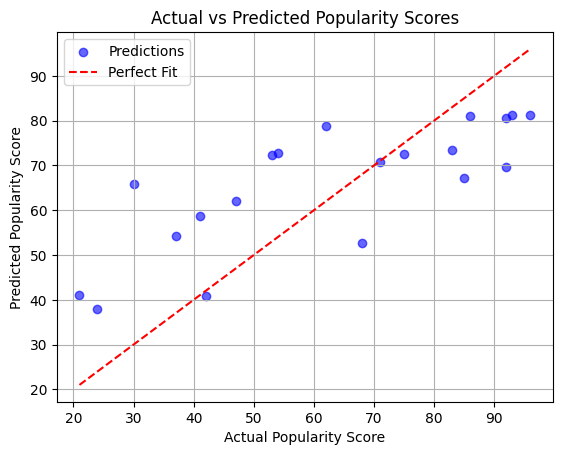
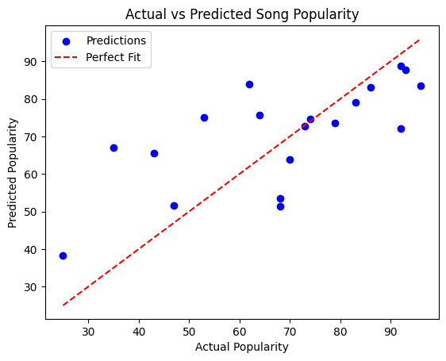
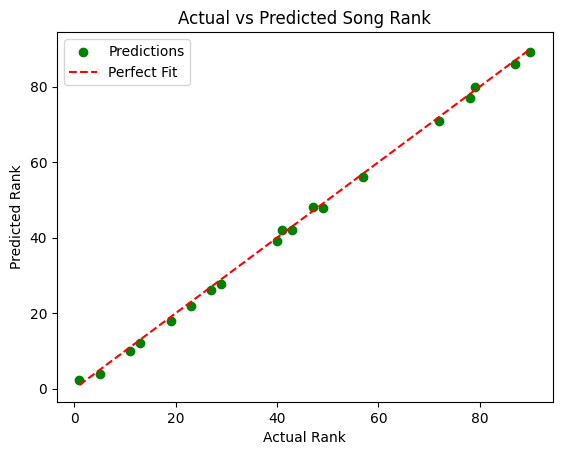

import pandas as pd
from sklearn.ensemble import RandomForestRegressor
from sklearn.ensemble import RandomForestClassifier
from sklearn.metrics import classification_report, confusion_matrix
import matplotlib.pyplot as plt
from sklearn.metrics import mean_squared_error, r2_score
from sklearn.model_selection import train_test_split
import numpy as np
import seaborn as sns
import matplotlib.pyplot as plt
from sklearn.multioutput import MultiOutputRegressor
from sklearn.ensemble import GradientBoostingRegressor
from sklearn.linear_model import LinearRegressionSupervised Learning
Introduction and Motivation
In this supervised analysis, we aim to evaluate features that contribute the most to song popularity. This is going to be done through different types of machine learning models. By selecting the most relevant features, we can improve model accuracy.
Overview of Methods
To predict song popularity, the following regression models were implemented: - Linear Regression - Random Forest Method - Gradient Boosting Regression
Code
Provide the source code used for this section of the project here.
If you’re using a package for code organization, you can import it at this point. However, make sure that the actual workflow steps—including data processing, analysis, and other key tasks—are conducted and clearly demonstrated on this page. The goal is to show the technical flow of your project, highlighting how the code is executed to achieve your results.
If relevant, link to additional documentation or external references that explain any complex components. This section should give readers a clear view of how the project is implemented from a technical perspective.
Remember, this page is a technical narrative, NOT just a notebook with a collection of code cells, include in-line Prose, to describe what is going on.
#Reads in all the processed-data
masterlist_data = pd.read_csv('../../data/processed-data/artist_song_masterlist.csv')
tfidf_df = pd.read_csv('../../data/processed-data/tfidf.csv')#Expand the sentiment vader column so that we can split it into positive, negative, and neutral
masterlist_data['Sentiment (VADER)'] = masterlist_data['Sentiment (VADER)'].fillna('{}').apply(eval)
sentiment_df = masterlist_data['Sentiment (VADER)'].apply(pd.Series)
sentiment_df.columns = ['Sentiment_Neg', 'Sentiment_Neu', 'Sentiment_Pos', 'Sentiment_Compound']
masterlist_data = pd.concat([masterlist_data, sentiment_df], axis=1)
masterlist_data = masterlist_data.drop(columns=['Sentiment (VADER)'])#Check columns
masterlist_data.columns.tolist()['Track ID',
'Track Name',
'Song Popularity',
'Album',
'Song Release Date',
'Duration (ms)',
'Artists',
'Explicit',
'Song Rank',
'Artist ID',
'Genres',
'Followers',
'Popularity',
'Lyrics',
'Total Artists On Song',
'Lyrics Word Count',
'Genre_',
'Genre_afro r&b',
'Genre_afrobeats',
'Genre_afrofuturism',
'Genre_afropop',
'Genre_alabama indie',
'Genre_album rock',
'Genre_alt z',
'Genre_alte',
'Genre_alternative hip hop',
'Genre_alternative r&b',
'Genre_alternative rock',
'Genre_amapiano',
'Genre_ambient folk',
'Genre_anime',
'Genre_art pop',
'Genre_asheville indie',
'Genre_atl hip hop',
'Genre_azonto',
'Genre_bedroom pop',
'Genre_blues rock',
'Genre_british folk',
'Genre_bubblegrunge',
'Genre_bubblegum bass',
'Genre_canadian hip hop',
'Genre_canadian pop',
'Genre_candy pop',
'Genre_chamber pop',
'Genre_classic oklahoma country',
'Genre_classic rock',
'Genre_classic texas country',
'Genre_colombian pop',
'Genre_conscious hip hop',
'Genre_contemporary country',
'Genre_corrido',
'Genre_country',
'Genre_country dawn',
'Genre_country road',
'Genre_countrygaze',
'Genre_crank wave',
'Genre_dance pop',
'Genre_deconstructed club',
'Genre_deep new americana',
'Genre_desi hip hop',
'Genre_dfw rap',
'Genre_digital hardcore',
'Genre_electric blues',
'Genre_electronica',
'Genre_escape room',
'Genre_experimental hip hop',
'Genre_experimental pop',
'Genre_freak folk',
'Genre_garage rock',
'Genre_gen z singer-songwriter',
'Genre_glitch',
'Genre_glitch hop',
'Genre_hard rock',
'Genre_heartland rock',
'Genre_hip hop',
'Genre_houston rap',
'Genre_hyperpop',
'Genre_indian underground rap',
'Genre_indie pop',
'Genre_indie rock',
'Genre_indietronica',
'Genre_instrumental hip hop',
'Genre_intelligent dance music',
'Genre_irish hip hop',
'Genre_irish indie rock',
'Genre_irish post-punk',
'Genre_irish singer-songwriter',
'Genre_jam band',
'Genre_jazztronica',
'Genre_jersey club',
'Genre_k-pop',
'Genre_k-pop boy group',
'Genre_k-pop girl group',
'Genre_la pop',
'Genre_latin pop',
'Genre_malayalam hip hop',
'Genre_melodic rap',
'Genre_metropopolis',
'Genre_modern alternative pop',
'Genre_modern blues rock',
'Genre_modern country pop',
'Genre_modern indie pop',
'Genre_modern rock',
'Genre_musica mexicana',
'Genre_nigerian hip hop',
'Genre_nigerian pop',
'Genre_no wave',
'Genre_noise rock',
'Genre_pop',
'Genre_pop rap',
'Genre_pov: indie',
'Genre_power pop',
'Genre_proto-hyperpop',
'Genre_psychedelic hip hop',
'Genre_punk blues',
'Genre_r&b',
'Genre_rap',
'Genre_red dirt',
'Genre_reggaeton',
'Genre_reggaeton chileno',
'Genre_reggaeton colombiano',
'Genre_rock',
'Genre_roots americana',
'Genre_sacramento indie',
'Genre_sad sierreno',
'Genre_sierreno',
'Genre_singer-songwriter pop',
'Genre_slacker rock',
'Genre_small room',
'Genre_social media pop',
'Genre_southern hip hop',
'Genre_southern rock',
'Genre_tape club',
'Genre_transpop',
'Genre_trap',
'Genre_trap latino',
'Genre_trap queen',
'Genre_twee pop',
'Genre_uk alternative pop',
'Genre_uk contemporary r&b',
'Genre_uk pop',
'Genre_urbano latino',
'Genre_viral rap',
'Genre_west coast rap',
'Genre_wonky',
'Sentiment_Neg',
'Sentiment_Neu',
'Sentiment_Pos',
'Sentiment_Compound']#Look at all the types of the columns
pd.set_option('display.max_rows', None)
print(masterlist_data.dtypes)
pd.reset_option('display.max_rows')Track ID object
Track Name object
Song Popularity float64
Album object
Song Release Date object
Duration (ms) float64
Artists object
Explicit bool
Song Rank int64
Artist ID object
Genres object
Followers int64
Popularity int64
Lyrics object
Total Artists On Song float64
Lyrics Word Count int64
Genre_ int64
Genre_afro r&b int64
Genre_afrobeats int64
Genre_afrofuturism int64
Genre_afropop int64
Genre_alabama indie int64
Genre_album rock int64
Genre_alt z int64
Genre_alte int64
Genre_alternative hip hop int64
Genre_alternative r&b int64
Genre_alternative rock int64
Genre_amapiano int64
Genre_ambient folk int64
Genre_anime int64
Genre_art pop int64
Genre_asheville indie int64
Genre_atl hip hop int64
Genre_azonto int64
Genre_bedroom pop int64
Genre_blues rock int64
Genre_british folk int64
Genre_bubblegrunge int64
Genre_bubblegum bass int64
Genre_canadian hip hop int64
Genre_canadian pop int64
Genre_candy pop int64
Genre_chamber pop int64
Genre_classic oklahoma country int64
Genre_classic rock int64
Genre_classic texas country int64
Genre_colombian pop int64
Genre_conscious hip hop int64
Genre_contemporary country int64
Genre_corrido int64
Genre_country int64
Genre_country dawn int64
Genre_country road int64
Genre_countrygaze int64
Genre_crank wave int64
Genre_dance pop int64
Genre_deconstructed club int64
Genre_deep new americana int64
Genre_desi hip hop int64
Genre_dfw rap int64
Genre_digital hardcore int64
Genre_electric blues int64
Genre_electronica int64
Genre_escape room int64
Genre_experimental hip hop int64
Genre_experimental pop int64
Genre_freak folk int64
Genre_garage rock int64
Genre_gen z singer-songwriter int64
Genre_glitch int64
Genre_glitch hop int64
Genre_hard rock int64
Genre_heartland rock int64
Genre_hip hop int64
Genre_houston rap int64
Genre_hyperpop int64
Genre_indian underground rap int64
Genre_indie pop int64
Genre_indie rock int64
Genre_indietronica int64
Genre_instrumental hip hop int64
Genre_intelligent dance music int64
Genre_irish hip hop int64
Genre_irish indie rock int64
Genre_irish post-punk int64
Genre_irish singer-songwriter int64
Genre_jam band int64
Genre_jazztronica int64
Genre_jersey club int64
Genre_k-pop int64
Genre_k-pop boy group int64
Genre_k-pop girl group int64
Genre_la pop int64
Genre_latin pop int64
Genre_malayalam hip hop int64
Genre_melodic rap int64
Genre_metropopolis int64
Genre_modern alternative pop int64
Genre_modern blues rock int64
Genre_modern country pop int64
Genre_modern indie pop int64
Genre_modern rock int64
Genre_musica mexicana int64
Genre_nigerian hip hop int64
Genre_nigerian pop int64
Genre_no wave int64
Genre_noise rock int64
Genre_pop int64
Genre_pop rap int64
Genre_pov: indie int64
Genre_power pop int64
Genre_proto-hyperpop int64
Genre_psychedelic hip hop int64
Genre_punk blues int64
Genre_r&b int64
Genre_rap int64
Genre_red dirt int64
Genre_reggaeton int64
Genre_reggaeton chileno int64
Genre_reggaeton colombiano int64
Genre_rock int64
Genre_roots americana int64
Genre_sacramento indie int64
Genre_sad sierreno int64
Genre_sierreno int64
Genre_singer-songwriter pop int64
Genre_slacker rock int64
Genre_small room int64
Genre_social media pop int64
Genre_southern hip hop int64
Genre_southern rock int64
Genre_tape club int64
Genre_transpop int64
Genre_trap int64
Genre_trap latino int64
Genre_trap queen int64
Genre_twee pop int64
Genre_uk alternative pop int64
Genre_uk contemporary r&b int64
Genre_uk pop int64
Genre_urbano latino int64
Genre_viral rap int64
Genre_west coast rap int64
Genre_wonky int64
Sentiment_Neg float64
Sentiment_Neu float64
Sentiment_Pos float64
Sentiment_Compound float64
dtype: object#Select numeric features
selected_features = [
'Duration (ms)', 'Explicit', 'Song Rank', 'Followers', 'Lyrics Word Count',
'Total Artists On Song', 'Sentiment_Neg', 'Sentiment_Neu',
'Sentiment_Pos', 'Sentiment_Compound'
]
#Select all the genre columns
genre_columns = [col for col in masterlist_data.columns if col.startswith('Genre_')]
selected_features.extend(genre_columns)
X = masterlist_data[selected_features]
y = masterlist_data['Song Popularity']#80/20 split
X_train, X_test, y_train, y_test = train_test_split(X, y, test_size=0.2, random_state=42)#RMF model is used to predict song popularity based on given features
rf_model = RandomForestRegressor(random_state=42)
rf_model.fit(X_train, y_train)
y_rf_pred = rf_model.predict(X_test)
mse_rf = mean_squared_error(y_test, y_rf_pred)
r2_rf = r2_score(y_test, y_rf_pred)
print(f"Random Forest Mean Squared Error: {mse_rf}")
print(f"Random Forest R-Squared: {r2_rf}")Random Forest Mean Squared Error: 270.206915
Random Forest R-Squared: 0.5391634290684586#Top 10 important features were uncovered
n = 10
importances = rf_model.feature_importances_
indices = np.argsort(importances)[::-1]
top_features = indices[:n]
other_importance = np.sum(importances[indices[n:]])
plt.bar(
range(n),
importances[top_features],
tick_label=[selected_features[i] for i in top_features]
)
plt.xticks(rotation=45, ha="right")
plt.title("Feature Importances from Random Forest (Top 10 Features)")
plt.ylabel("Importance")
plt.xlabel("Features")
plt.show()
Interpretation
It seems like ‘Followers’ is the most important aspect to sconsider for song popularity. This means, even if the song is really good, the artists should promote themselves.
#Figure shows the actual vs predict popularity scores
plt.scatter(y_test, y_rf_pred, alpha=0.6, color='blue', label='Predictions')
plt.plot([y_test.min(), y_test.max()], [y_test.min(), y_test.max()], color='red', linestyle='--', label='Perfect Fit') # Line of perfect predictions
plt.title("Actual vs Predicted Popularity Scores")
plt.xlabel("Actual Popularity Score")
plt.ylabel("Predicted Popularity Score")
plt.legend()
plt.grid(True)
plt.show()
X.dropna(inplace=True)
#There are two targets
y_multi = masterlist_data[['Song Popularity', 'Song Rank']]
y_multi = y_multi.loc[X.index]
#Split in 80/20
X_train, X_test, y_train, y_test = train_test_split(X, y_multi, test_size=0.2, random_state=42)
#Using GradientBoostingRegressor
multi_regressor = MultiOutputRegressor(GradientBoostingRegressor(random_state=42))
multi_regressor.fit(X_train, y_train)
y_multi_pred = multi_regressor.predict(X_test)
mse_popularity = mean_squared_error(y_test['Song Popularity'], y_multi_pred[:, 0])
mse_rank = mean_squared_error(y_test['Song Rank'], y_multi_pred[:, 1])
print(f"Popularity MSE: {mse_popularity}")
print(f"Rank MSE: {mse_rank}")/var/folders/c4/ckrgfkld6ll_8d5glczkzftw0000gn/T/ipykernel_16209/4181636287.py:1: SettingWithCopyWarning:
A value is trying to be set on a copy of a slice from a DataFrame
See the caveats in the documentation: https://pandas.pydata.org/pandas-docs/stable/user_guide/indexing.html#returning-a-view-versus-a-copy
X.dropna(inplace=True)Popularity MSE: 210.31359827795765
Rank MSE: 1.038648227890669#Splitting the output by song popularity and song rank so we can individually graph them
actual_popularity = y_test['Song Popularity']
predicted_popularity = y_multi_pred[:, 0]
actual_rank = y_test['Song Rank']
predicted_rank = y_multi_pred[:, 1]
#This is for song popularity
plt.scatter(actual_popularity, predicted_popularity, color='blue', label='Predictions')
plt.plot([actual_popularity.min(), actual_popularity.max()],
[actual_popularity.min(), actual_popularity.max()],
color='red', linestyle='--', label='Perfect Fit')
plt.title('Actual vs Predicted Song Popularity')
plt.xlabel('Actual Popularity')
plt.ylabel('Predicted Popularity')
plt.legend()
plt.show()
#This is for song rank
plt.scatter(actual_rank, predicted_rank, color='green', label='Predictions')
plt.plot([actual_rank.min(), actual_rank.max()],
[actual_rank.min(), actual_rank.max()],
color='red', linestyle='--', label='Perfect Fit')
plt.title('Actual vs Predicted Song Rank')
plt.xlabel('Actual Rank')
plt.ylabel('Predicted Rank')
plt.legend()
plt.show()

Interpretation
There seems to be an overfitting with song rank, but the MSE score shows that there is a good predictors in song rank while a low prediction in song popularity.
#Analysing song popularity based on sentiment outputs
X = masterlist_data[['Sentiment_Pos', 'Sentiment_Neg', 'Sentiment_Neu', 'Explicit']]
y = masterlist_data['Song Popularity']
#Using test train split
X_train, X_test, y_train, y_test = train_test_split(X, y, test_size=0.2, random_state=42)
#Using Random Forest to train and test data
rf_model = RandomForestRegressor(random_state=42)
rf_model.fit(X_train, y_train)
y_pred = rf_model.predict(X_test)
mse = mean_squared_error(y_test, y_pred)
r2 = r2_score(y_test, y_pred)
print(f"Mean Squared Error (MSE): {mse}")
print(f"R-Squared (R2): {r2}")Mean Squared Error (MSE): 574.7747460666667
R-Squared (R2): 0.019724483974030815#Graphing the sentiment values with feature importance to see if positive, negative or neutral is better along with being explicit
feature_importances = pd.Series(rf_model.feature_importances_, index=X.columns)
feature_importances.sort_values(ascending=False).plot(kind='bar', color='skyblue')
plt.title('Feature Importance By Sentiment')
plt.ylabel('Importance Score')
plt.xlabel('Feature')
plt.grid(axis='y', linestyle='--', alpha=0.7)
plt.show()
Interpretation
Sentiment_Neg has the highest importance score. This shows that songs that have negative sentiment tend to have higher song popularity. A song being explicit or not does not seem to matter as much, which is surprising because we wonder if that could be due to song being played in public.